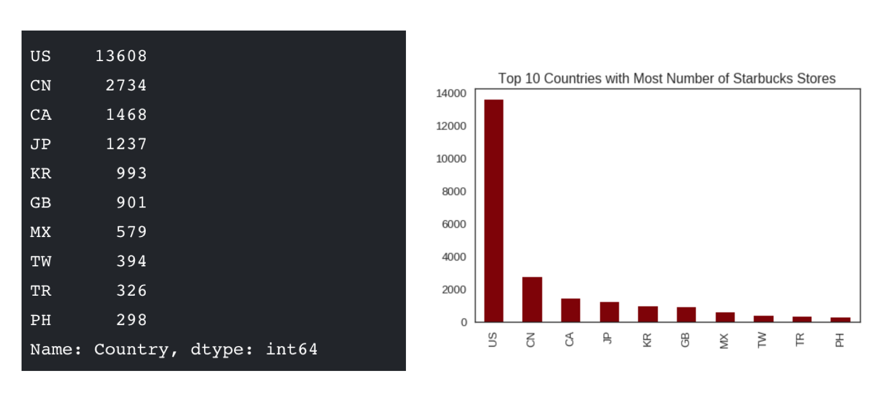
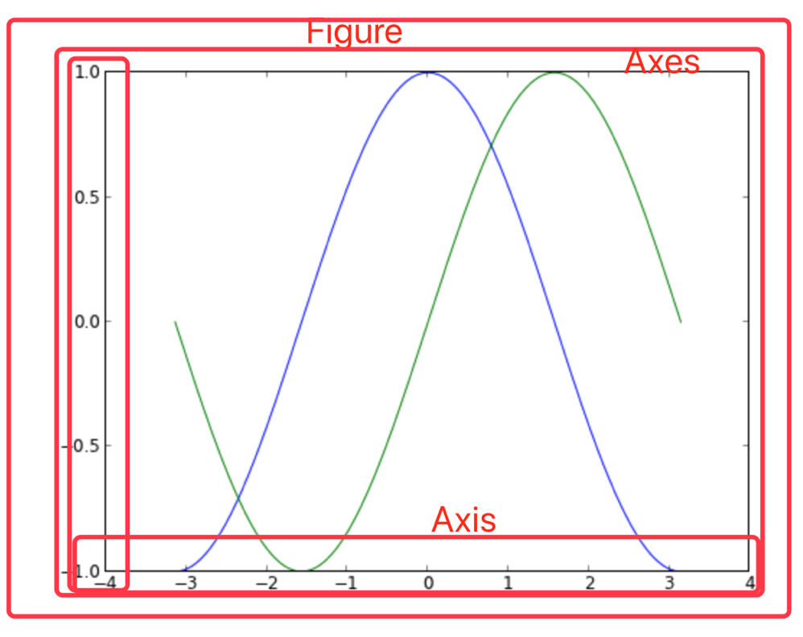

绘图架构
学习目标
- 目标
- 知道Matplotlib的绘图架构
- 应用
- 无
一、什么是Matplotlib
- 是专门用于开发2D图表(包括3D图表)
- 使用起来及其简单
- 以渐进、交互式方式实现数据可视化
二、为什么要学习Matplotlib
可视化是在整个数据挖掘的关键辅助工具，可以清晰的理解数据，从而调整我们的分析方法。
- 能将数据进行可视化,更直观的呈现
- 使数据更加客观、更具说服力
例如下面两个图为数字展示和图形展示：

我们先来简单画一个图看下效果
plt.figure(figsize=(20, 8), dpi = 100)
plt.plot([1,2,3], [4,5,6])
plt.show()

四、Matplotlib框架构成
matplotlib框架分为三层，这三层构成了一个栈，上层可以调用下层。

1、后端层
matplotlib的底层，实现了大量的抽象接口类，这些API用来在底层实现图形元素的一个个类
- FigureCanvas对象实现了绘图区域这一概念
- Renderer对象在FigureCanvas上绘图
2、美工层
图形中所有能看到的元素都属于Artist对象，即标题、轴标签、刻度等组成图形的所有元素都是Artist对象的实例
- Figure:指整个图形(包括所有的元素,比如标题、线等)
- Axes(坐标系):数据的绘图区域
- Axis(坐标轴)：坐标系中的一条轴，包含大小限制、刻度和刻度标签
特点为：
- 一个figure(图)可以包含多个axes(坐标系)，但是一个axes只能属于一个figure。
- 一个axes(坐标系)可以包含多个axis(坐标轴)，包含两个即为2d坐标系，3个即为3d坐标系

3、脚本层
主要用于可视化编程，pytplot模块可以提供给我们一个与matplotlib打交道的接口。可以只通过调用pyplot模块的函数从而操作整个程序包，来绘制图形。
- 操作或者改动Figure对象，例如创建Figure对象
- 大部分工作是处理样本文件的图形与坐标的生成